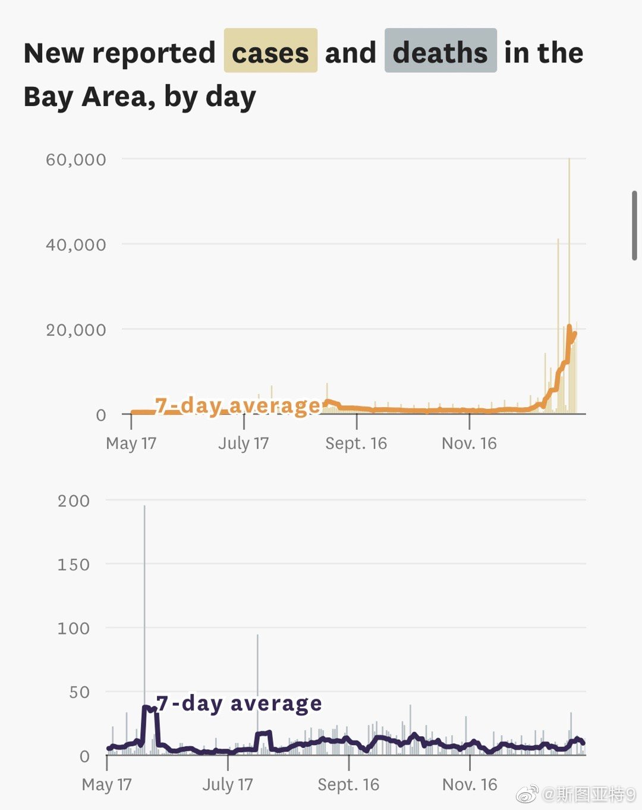
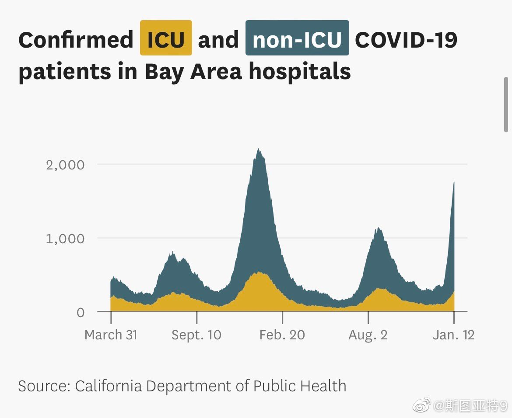

湾区这确诊数已经高到让前面几波的顶都快看不见了……住院数还暂时没有达到史上新高，ICU数还没有达到Delta那一波的数量。死亡数暂时还没看到有特别的变化。不过死亡数有大概一个月的滞后也不能说的太早。 
回复@usuario:还真说对了。//@usuario:Guardian 说靠谱，因为部长有最终判断权@斯图亚特9:据媒体报道，德约科维奇的律师说，澳大利亚政府第二次取消他的签证的理由即不是没有接种疫苗，也不是瞒报了入境前14天的行程，而是妨碍了澳大利亚的公共利益（public interest）。我看有人的解读是认为不驱逐他会助长反疫苗的人的气焰。听着靠谱吗？这官司有希望赢吗？
的确，德约科维奇被驱逐的理由完全是个人观点。如很多批评者所说，这是在侵犯言论自由。我完全同意这个观点。但同时，言论自由的边界不是从来就不包括海关是否允许外国人入境吗？要不然，美国海关检查入境的外国人社交媒体有没有支持ISIS的时候怎么没人抱怨言论自由？我非常赞同各国给予移民和难民更多的权利和法律程序。但这是体制问题，不是具体执行的问题。德约科维奇事件让移民和难民的权利更多得到讨论，可能算是一个正面意义。